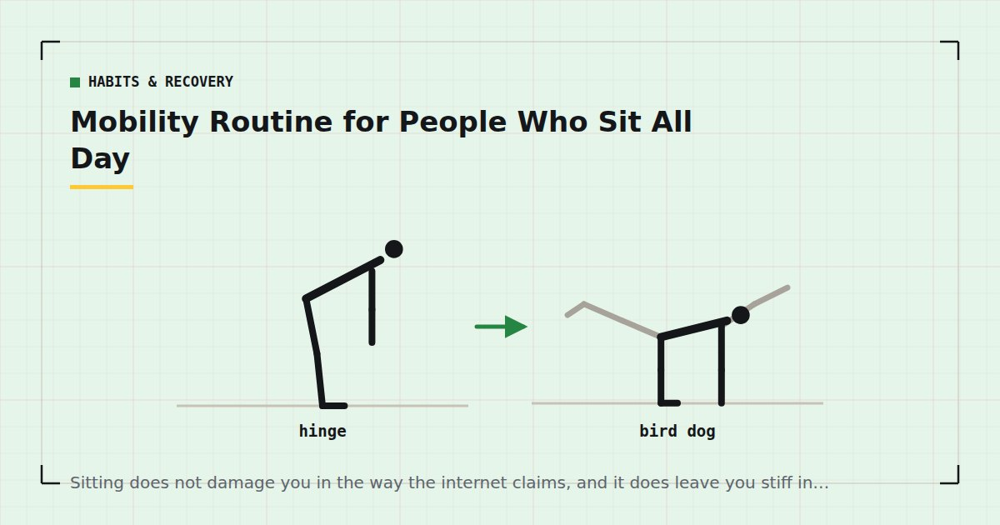

Habits & Recovery
Mobility Routine for People Who Sit All Day
Sitting does not damage you in the way the internet claims, and it does leave you stiff in a fairly predictable pattern. This targets that pattern in ten minutes.

Sitting has acquired a reputation as uniquely harmful, and the claims made about it — that it is the new smoking, that it deactivates muscles, that it permanently shortens tissue — run well ahead of what is known.
What is true is more modest and more actionable: holding any position for hours leaves you stiff in a predictable pattern, and a short daily routine addresses it.
What sitting actually does
Reasonably established: prolonged sedentary time is associated with worse health outcomes independent of how much you exercise. Sitting for hours holds the hips flexed and the spine in a fixed position, and tissue held in one position for long periods becomes stiff and less comfortable to move.
Overstated: that sitting "switches off" muscles. Muscles that are unloaded for long periods tend to be undertrained and can feel harder to consciously contract, which is a different and less dramatic claim.
Not established: that sitting causes specific postural deformities that then cause pain. The relationship between posture and pain is considerably weaker than commonly asserted, and I would rather say so than repeat the standard version.
The practical upshot: the problem is mainly duration in one position, and the fix is mainly moving more often. A routine helps and it is the second-order intervention.
The predictable pattern
Four areas, consistently.
Hip flexors, held short for hours. The most reliable complaint.
Thoracic spine, held in flexion, losing extension and rotation.
Glutes, unloaded and undertrained — see glute exercises at home.
Ankles, held still, losing dorsiflexion, which then limits squat depth — see bodyweight squat form.
Shoulders and neck are frequently added to this list, and the evidence linking desk posture to shoulder and neck pain is weaker than the confidence with which it is asserted. Movement helps regardless of the mechanism.
The ten-minute routine
Daily, or most days. More valuable done briefly and often than thoroughly and rarely.
Half-kneeling hip flexor stretch — 45s each side
Tuck the pelvis under before pushing the hips forward. Without the tuck you extend the lower back instead of stretching the hip.
Cat–cow — 60 seconds
Ten slow cycles, moving one segment at a time rather than swinging between extremes.
Thoracic rotation, side-lying — 45s each side
Knees bent and stacked, rotating the top arm across and behind. Targets the rotation a chair removes.
Glute bridge — 60 seconds
Fifteen with a one-second squeeze. Loading rather than stretching, and the most useful item here for anyone who sits.
Ankle dorsiflexion drive — 45s each side
Half-kneeling, drive the front knee forward over the toes with the heel down, hold two seconds, repeat.
Deep squat hold — 60 seconds
Sit in the bottom of a squat holding a doorframe for support. Broken into two thirty-second holds if a minute is too much.
Doorway chest stretch — 45s each side
Forearm on the frame, rotate the body away.
Breaks matter more than the routine
Worth stating plainly, because it inverts the usual emphasis.
Ten minutes of mobility after eight hours of sitting is better than nothing. Standing up for two minutes every hour is probably better still, because the problem is duration in one position rather than a deficit that can be repaid afterwards.
What actually works: a reason to stand that is not willpower. Filling a smaller water bottle, taking calls standing, putting the printer somewhere inconvenient. The aim is a few minutes of movement several times a day rather than one virtuous block.
If you have a standing desk, use it as a platform for movement rather than as the movement — standing still for eight hours is its own fixed position, and the evidence for standing desks producing meaningful health outcomes is weaker than their marketing suggests. There is more on this in the office workout.
The problem is holding one position for hours. Ten minutes of stretching does not undo that as well as standing up eight times does.
Why strength beats stretching here
The most useful reframe in this article.
Stretching increases how far a joint can be moved passively. Strength training through a full range increases how far you can move it under your own control, and builds the tissue's capacity at the same time.
For someone who sits all day, the second is generally more valuable. A deep squat done regularly does more for hip and ankle range than a hip flexor stretch, because it loads the position rather than merely visiting it. Split squats do more for hip extension than any stretch. Glute bridges do more for an undertrained posterior chain than foam rolling it.
This is why the routine above includes loaded items rather than being purely passive, and why the strongest version of this advice is simply: do the three-day split and add the routine on non-training days. Adult activity guidance is framed around aerobic and muscle-strengthening activity rather than flexibility,1 which is a reasonable indication of relative priority.
On posture
Briefly, because it is where most desk-worker advice goes wrong.
The idea that there is one correct posture, that deviating from it causes pain, and that specific exercises correct it, is considerably weaker than commonly presented. People with visibly poor posture frequently have no pain; people with textbook posture frequently do.
The more defensible position is that the best posture is the next one — that varying position matters more than achieving a particular one. Practically that means changing how you sit periodically rather than trying to hold an ideal, and standing up regularly.
That is a less satisfying answer than a corrective exercise programme, and it is closer to what is known.
When it is not just stiffness
Persistent or worsening pain, pain that radiates down an arm or leg, numbness, tingling, weakness, or pain that wakes you at night are not desk stiffness and are not addressed by a mobility routine. See a physiotherapist or your GP. The same applies to any pain lasting more than a few weeks despite movement, or any that follows a specific incident.
Ordinary desk stiffness is diffuse, improves with movement, worsens with prolonged sitting, and does not radiate. Anything outside that description warrants an assessment rather than more stretching.
Where to go next
For loaded work that addresses the same areas, see glute exercises at home. For movement during the working day, see the office workout.
Frequently asked questions
What does sitting all day actually do to you?
It holds the hips flexed and the spine in a fixed position for hours, which leaves tissue stiff and less comfortable to move. Prolonged sedentary time is also associated with worse health outcomes independent of exercise. Claims that it switches muscles off or causes specific deformities are overstated.
What is the best mobility routine for desk workers?
Half-kneeling hip flexor stretch, cat-cow, side-lying thoracic rotation, glute bridges, ankle dorsiflexion drives, a deep squat hold and a doorway chest stretch. About ten minutes, done daily or most days.
Is stretching or strength training better for desk stiffness?
Strength training through a full range, generally. It increases how far you can move a joint under your own control and builds tissue capacity at the same time. A deep squat done regularly does more for hip and ankle range than a hip flexor stretch.
Do standing desks help?
They change which tissues are loaded and let you move more easily, but standing still for eight hours is its own fixed position. The evidence for standing desks producing meaningful health outcomes is weaker than their marketing suggests. Use one as a platform for movement.
Does bad posture cause back pain?
The relationship is considerably weaker than commonly asserted. People with visibly poor posture frequently have no pain and vice versa. Varying your position regularly appears to matter more than achieving a particular one.
When should I see someone about desk-related pain?
If pain is persistent or worsening, radiates down an arm or leg, involves numbness, tingling or weakness, wakes you at night, or lasts more than a few weeks despite movement. None of those are desk stiffness and none are fixed by a mobility routine.
Sources and further reading
- World Health Organization. WHO Guidelines on Physical Activity and Sedentary Behaviour. 2020.
- NHS. Physical activity guidelines for adults aged 19 to 64.
- Herbert RD, de Noronha M, Kamper SJ. “Stretching to prevent or reduce muscle soreness after exercise.” Cochrane Database of Systematic Reviews, 2011;(7):CD004577. PubMed.
- MedlinePlus, U.S. National Library of Medicine. Exercise and Physical Fitness.
Comments
Comments are not enabled yet. Add a hosted comment embed (Disqus, Commento, Giscus) inside this container when you are ready.